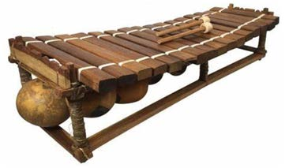
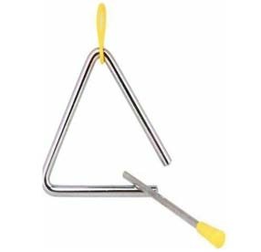
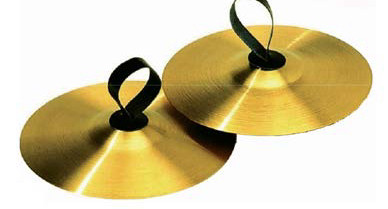
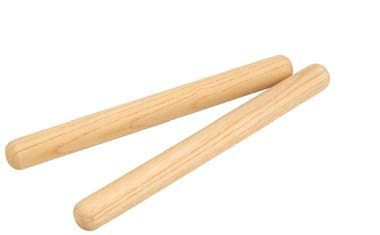
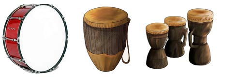

Struck instruments
These are instruments that a musician beats or strikes to give out sounds. The musician may use hands or special equipment to strike these instruments. There are different types of struck instruments. Examples are xylophones, drums, claves, triangles and cymbals. Figure 2 shows examples of struck instruments.

Xylophone

Triangle

Cymbals

Claves

Drums
Figure 2: Struck instruments